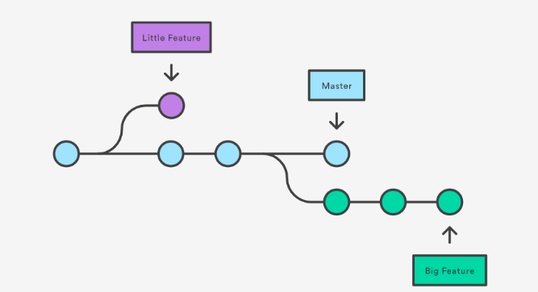
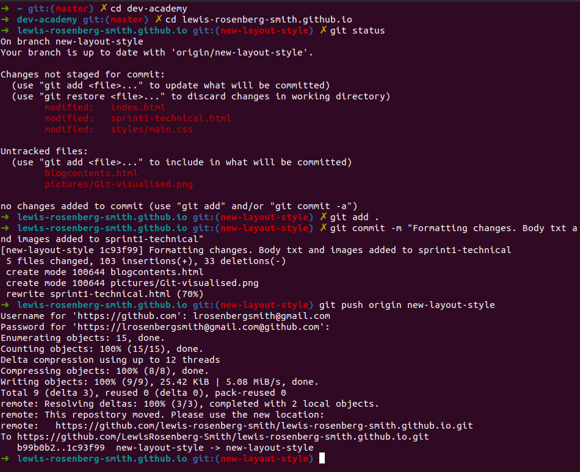

Sprint 1 technical
A brief overview of Git and Github installation config and use.
jul 3 2020
What is Version Control?
Knowing the what and the why of version control as a concept is the first step I had to take to learning git. Picture youre working on a word document, and everytime you save the file it creates a new file in a new directory. The benefit of this would be that you always have the opportunity to revert back to a previous file if youve made a mistake you cant easily repair, but the obvious downside is clean file management becomes immediately horribe to deal with. Now picture youre working on the same word document in a team of 10 people. The goal is one finished file, but each of these people colabourating will have been saving their own version of each iteration of the work ever single time. Thats where a version control system comes in. A version control system like git enables users to create a repository, which I liken to a directory AND a timeline of edits and changes (commits) rolled into one. Now every file in the repository can be edited on a seperate branch and merged to the master branch at the users discresion. Whenever these repositories want to be shared, git can push these repositories to a hosted system called Github, where others can download and work on thier own branches without compromising other peoples work, or introducing bugs or glitches in the project.

this picture shows the repository "master" with each circle representing a commit. Using checkout branch to establish "little Feature" and "big feature" whilst keeping "master" intact.
Command line basics.
The comand line is a simple text interface that you can access on your opperating system, which enables you to type commands as text to excecute functions. Whenever you are navigating through Windows File Explorer Mac OS's Finder, you're clicking on directories, double clicking, clicking back buttons, right clicking to create or delete files in the drop down menu etc. There are text commands that excecute all of these functions within the command line. The command line can become a really fast way of navigating and effecting a computers file structure once you become proficient with just a few commands. A further benefit of using the command line is once you install and configure git, the command line also enables you to manage your version control system, create and checkout branches, stage and commit files, and upload (push) or download (pull) repositories to/from github. (Github in this context can be refered to as the origin/remote)
Git commands, branching/forking, cloning and the log.
When youre using github and you want to work on a users project, the best practice is to use github to fork the repository. This creates a discrete copy of that repository on your account for you to work on without altering the master files. Branching is when you have a project on your own local machine and you would like to preserve the saved state of your project, whilst also making changes on a copy of the project, without changing the master. Like forking is to the remote server side git system, branching is used in the local user machine context.
Say youve followed the steps above and forked another users repository. The next step would be to clone the forked repository. What does that look like? once you have used command line to establish the root directory of that repository on your own machine, run git init to initialise that directory as a repository. You run `git clone "url-of-the-forked-branch"` and you will download from github, that very repository to work on. That process is cloning.
The Staging index and Git Commit
When you are working on a project, the workflow of git requires you to make your changes as needed to the files in the repository, `git add` the files you've changed and `git commit` to snapshot the state of your repository after those changes. `git add` adds the files to what is called the staging index; basically where files/directories are standing by to be committed. Then theres commits. These commits are your tree structure of progress towards your project goals, and each commit contains detailed information viewable in `git log`
`git log` is the command that allows you to view all the commits that have been made to the repository. The log also enables you to use command flags to see detailed information about which user made those commits, what the commit messages are, what files were changed, what changes were made to the files and when. A very useful tool for fault finding.

This image shows a screenshot of my command line as I navigate to my working directory, stage all files in that directory for commit, commit (with messages) those files and push to a branch on my origin/remote.